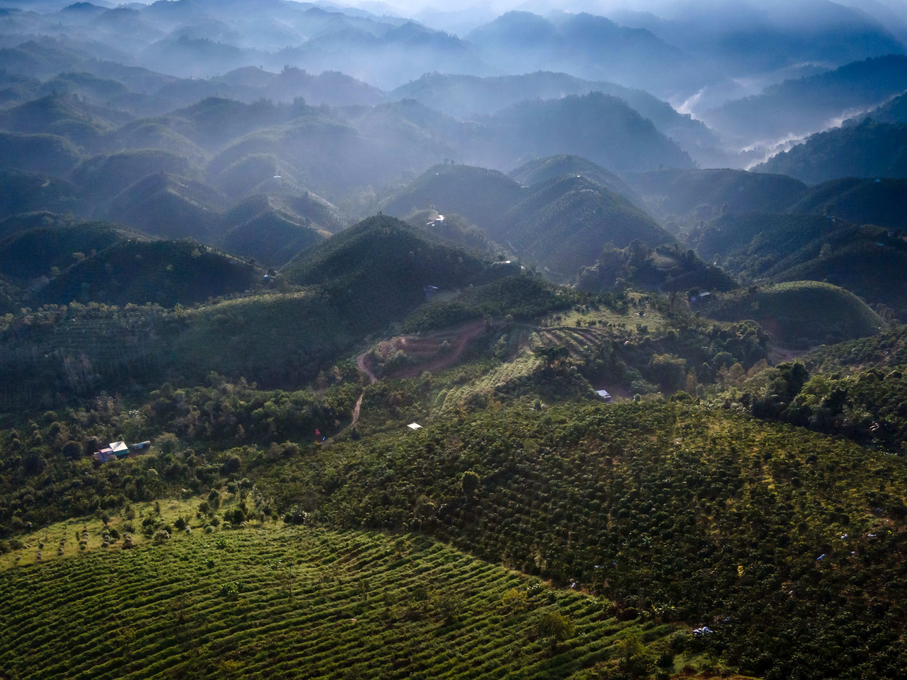

Coffee & Sustainability

What is sustainable coffee?
Sustainable coffee is coffee that is grown, produced, and sold in ways that help protect the environment while supporting the people who grow it. Coffee production involves many steps, from planting and harvesting the coffee beans to roasting, packaging, and transporting them around the world. By making these processes more environmentally friendly, the coffee industry can reduce its impact on the planet. Sustainable coffee also focuses on fair working conditions, supporting farmers, and ensuring that future generations can continue to grow and enjoy coffee.
Impacts:
Deforestation
Coffee farming can contribute to deforestation when forests are cleared to make room for plantations. This destroys wildlife habitats and reduces biodiversity. Growing coffee under the shade of existing trees can help protect forests and the animals that call them home.
Water use
Water is essential for growing, processing and producing coffee. However, high water consumption can put pressure on local water supplies, especially in areas affected by drought. More efficient farming and water-saving processing methods can help conserve this valuable resource.
Emissions
Coffee contributes to greenhouse gas emissions through farming, transportation, roasting and packaging. These emissions contribute to climate change, which can make growing conditions more challenging for coffee farmers. Using renewable energy, improving transport efficiency and reducing waste can help lower coffee’s carbon footprint.